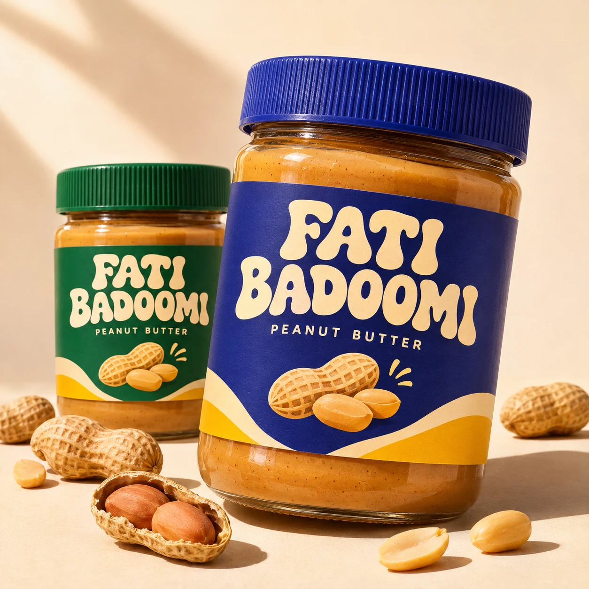

تیمِ کلاسیکTHE ORIGINAL
بادومیِ نرم
یه بافت یکدست، برای یه شروع شیرین
بعضی خوشحالیها توی یه شیشه جا میشن.
مثل کره بادومزمینیِ فَتی بادومی؛ رفیق خوشمزهی
صبحونهها و میانوعدههای تو.

نرم و یکدست یا پُر از تکههای بادوم؟
با طعمهای پیشنهادی ما آشنا شو.
یه بافت یکدست، برای یه شروع شیرین
با تکههای بادوم، برای عاشقای جویدن
وقتی بادوم و شکلات، رفیق میشن
بهزودی فروشگاه بادومی در راهه! طعمها و بستهبندیهای این صفحه، نمونهی پیشنهادی هستن.
ما به خوشحالیهای ساده فکر میکنیم؛ به عطر نون تازه، یه صبح آروم و قاشقی که میره توی شیشهی کره بادومزمینی.
فَتی بادومی قراره فاصلهی بین تولید و میز صبحونهت رو کوتاهتر کنه. یه ارتباط مستقیم، از جایی که بادومی ساخته میشه تا جایی که ازش لذت میبری.
یه قاشق بادومی، هزار تا بهونه برای لذت بردن.
یه صبح بخیرِ خوشمزه
رفیقِ میوه و جو دوسر
فوتِ کوزهگریِ کوکیهات
گاهی همین کافیه :)
نون تست، یه شیشه بادومی و کمی خلاقیت.
جو دوسر و میوه، با یه رفیق تازه.
بهونهای برای روشن کردن فر و دم کردن چای.
یه پیشنهاد خوشمزه داری یا میخوای بیشتر با ما آشنا بشی؟